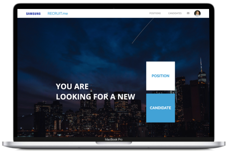
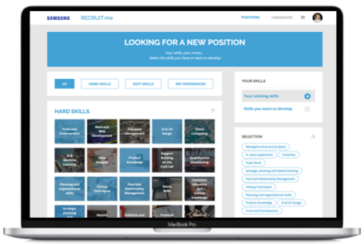
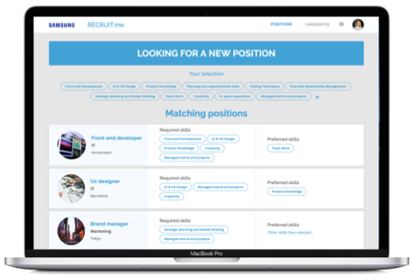
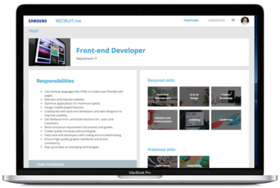
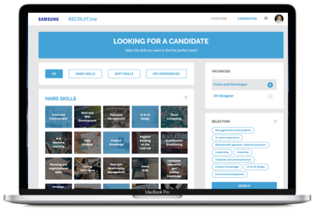
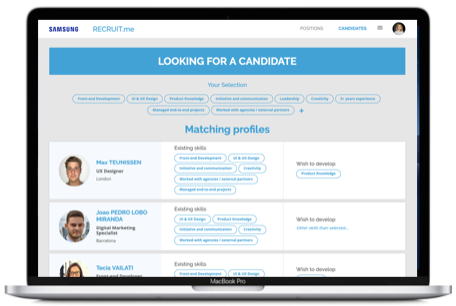
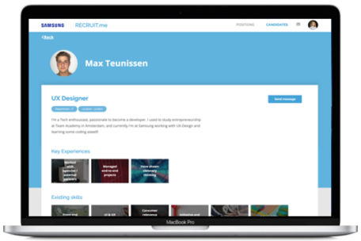

This platform is
- For employees of corporate international companies,
- Who need to move on to their next challenge / hire a new employee,
- And want to find a perfect match (job / employee) within the company.
- They choose Recruit.me because it enables them to grow within the same organization or to find talents already familiar with the company culture… (unlike LinkedIn!)
Persona
Annika, alias Anna, 35 years old. Finnish living in Amsterdam. Married for 7 years now to a Dutch man.
Graduated from Copenhagen Business School with a master’s degree in Business Management.
Now Brand Manager for several years at Samsung and manager of a team of 5. She earns 70K per year. Works 8 hours a day, 5 days a week.
She cares about her team and the skills they develop. Strives to build the strongest team possible: she likes to have real connections with people to see if they are a fit.
Favorite brands: Nike, Tommy Hilfiger, Zara.
Hobbies: Running, tennis, yoga.
Goal: Very eager to see her team members growing within the organization. Also wishes to develop certain skill within Samsung.
Frustration: Has a vacancy in her team but cannot find a good candidate in her network or through HR: She wants to find the best fit in the most efficient (with
Situation: It is wednesday afternoon, 1:00 p.m. after her meeting with HR to discuss the requirements. She is on her laptop at her desk, a bit stressed out (but will relax once she has found a match !)

User Journey
- Anna goes on the web application.
- She logs in.
- Navigates to the manager portal.
- Searches for candidates with specific skills.
- Browses the matching candidates.
- Sees a potential candidate.
- Views the profile.
- Messages the candidate.

We translated the user journey into a flowchart with Whimsical
User Interface (Figma)
UI Kit:

-
Color scheme:

Blue is usually associated with loyalty and trust.
It gives a sense of innovation which is what most people are looking for in a job portal. -
Wireframe and Mockups - 2 user journeys on a similar principle:
 Landing page - adapts if the employee is a manager or not.- LOOKING FOR A NEW POSITION:
-  Selection of skills that the employee has or wants to develop.
-  Search results - job positions ordered by the highest matching skills.
-  Overview of the position. Possibility to apply for opened vacancies + to contact other employees doing that job.
- LOOKING FOR A NEW CANDIDATE:
-  Selection of skills that the manager whishes the perfect candidate has or wants to develop.
-  Search results - employees ordered by the highest matching skills.
-  Overview of the employee profile. Possibility to contact the employee through a chat.
To have a better experience on the website, please use:
login: astrid@big.com / password: password
/!\ The Samsung logo has been used for DEMO purposes only.